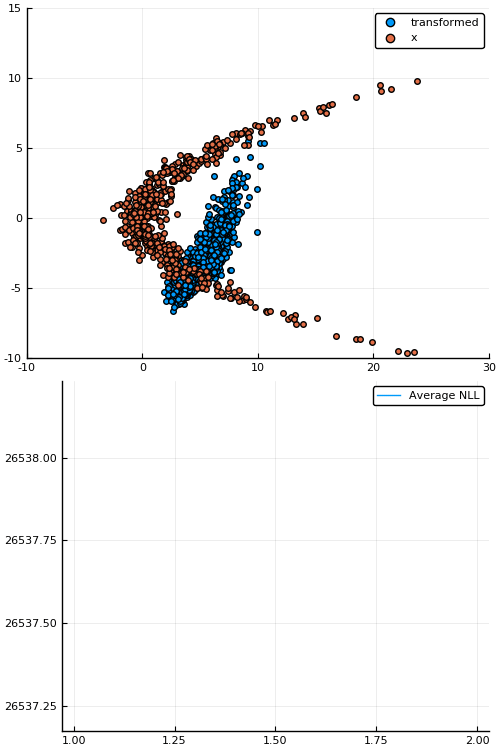

Bijectors.jlA bijector or diffeomorphism is a differentiable bijection (one-to-one and onto) \(b\) with a differentiable inverse \(b^{-1}\).
For example \(b(x) = \exp(x)\) for \(x \in (-\infty, \infty)\)
So \(\exp\) (and \(\log\)) is a bijector!
Ok, but why do I care?
Consider a generative process for \(y\) defined
where \(b\) is some transformation.
If \(b\) is a bijector, this induces a density \(\tilde{p}(y)\) defined by
Useful for changing the support of distributions, reparameterization, density estimation, varational inference, etc.
Bijectors.jlusing Bijectors; using Bijectors: Exp, Log
b = Exp()
b⁻¹ = inv(b)
b⁻¹ isa Log
true
We can evaluate a Bijector
x = 0.0
b(x) == 1.0 # since e⁰ = 1
true
We can compose bijectors to get a new Bijector
(b ∘ b) isa Bijector
true
And evaluate compositions of bijectors
(b⁻¹ ∘ b)(x) == x
true
What about more complex/deeper compositions?
cb = b ∘ b ∘ b
cb⁻¹ = inv(cb) # <= inversion of a "large" composition
(cb⁻¹ ∘ cb)(x) == x
true
As mentioned before, the following terms are of particular interest
Which works seamlessly even for compositions
logabsdetjac(cb, x)
3.718281828459045
Above logabsdetjac(cb, x) expands to
(y, logjac) = forward(cb.ts[1], x)
var"##res#256" = forward(cb.ts[2], y)
y = (var"##res#256").rv
logjac += (var"##res#256").logabsdetjac
logjac += logabsdetjac(cb.ts[3], y)
return logjac
while if we let cb = Composed([b, b, b]), we get
y, logjac = forward(cb.ts[1], x)
for i = 2:length(cb.ts)
res = forward(cb.ts[i], y)
y = res.rv
logjac += res.logabsdetjac
end
return logjac
And similarily for other methods.
d = Exponential(1.)
Exponential{Float64}(θ=1.0)
support(d)
RealInterval(0.0, Inf)
b = bijector(d)
Log{0}()
td = transformed(d, b) # OR `transformed(d)` in this case
Bijectors.TransformedDistribution{Exponential{Float64},Log{0},Univariate}(
dist: Exponential{Float64}(θ=1.0)
transform: Log{0}()
)
support(td)
RealInterval(-Inf, Inf)
Note: Distributions.support only works for UnivariateDistribution.
| Operation | Method | Freebie |
|---|---|---|
| \(b \mapsto b^{-1}\) | inv(b) |
\(\checkmark\) |
| \((b_1, b_2) \mapsto (b_1 \circ b_2)\) | b1 ∘ b2 |
\(\checkmark\) |
| \((b_1, b_2) \mapsto [b_1, b_2]\) | stack(b1, b2) |
\(\checkmark\) |
| \((b, n) \mapsto b^n := b \circ \cdots \circ b\) (n times) | b^n |
\(\checkmark\) |
| Operation | Method | Freebie |
|---|---|---|
| \(x \mapsto b(x)\) | b(x) |
\(\times\) |
| \(y \mapsto b^{-1}(y)\) | inv(b)(y) |
\(\times\) |
| \(x \mapsto \log \lvert\det \mathcal{J}_b(x)\rvert\) | logabsdetjac(b, x) |
AD |
| \(x \mapsto \big( b(x), \log \lvert \det \mathcal{J}_b(x)\rvert \big)\) | forward(b, x) |
\(\checkmark\) |
| Operation | Method | Freebie |
|---|---|---|
| \(p \mapsto q:= b_* p\) | q = transformed(p, b) |
\(\checkmark\) |
| \(y \sim q\) | y = rand(q) |
\(\checkmark\) |
| \(\log q(y)\) | logpdf(q, y) |
\(\checkmark\) |
| \(p \mapsto b\) s.t. \(\mathrm{support}(b_* p) = \mathbb{R}^d\) | bijector(p) |
\(\times\) |
| \(\big(x \sim p, b(x), \log \lvert\det \mathcal{J}_b(x)\rvert, \log q(y) \big)\) | forward(q) |
\(\checkmark\) |
Consider an Affine transformation, i.e.
for matrix \(W\) (with assumption \(\det W \ne 0\)) and vector \(b\),
and a non-linear (but invertible) activation function, e.g. LeakyReLU:
for some non-zero \(\alpha \in \mathbb{R}\) (usually chosen to be very small).
Looks familiar?
Yup; it's basically an invertible neural network!
layers = [LeakyReLU(α[i]) ∘ Affine(W[i], b[i]) for i = 1:num_layers]
b = foldl(∘, layers)
td = transformed(base_dist, b) # <= "deep" normalising flow!

Figure 1: Empirical density estimate (blue) compared with single batch of samples (red). Code can be found in scripts/nf_banana.jl.